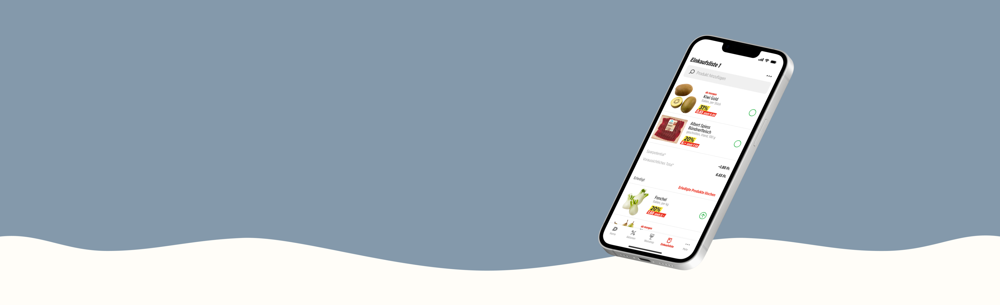
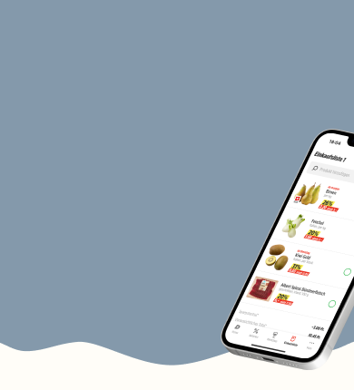
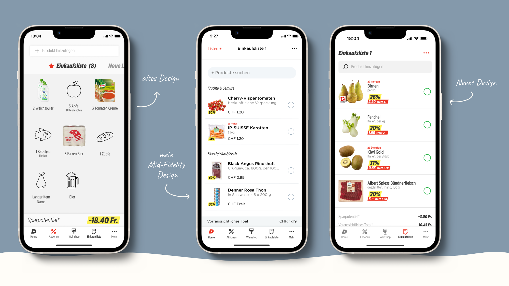
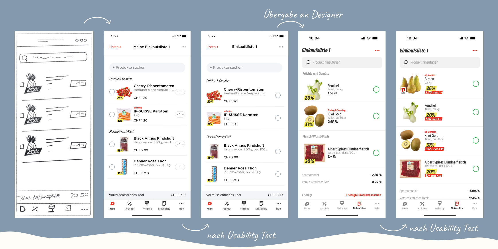
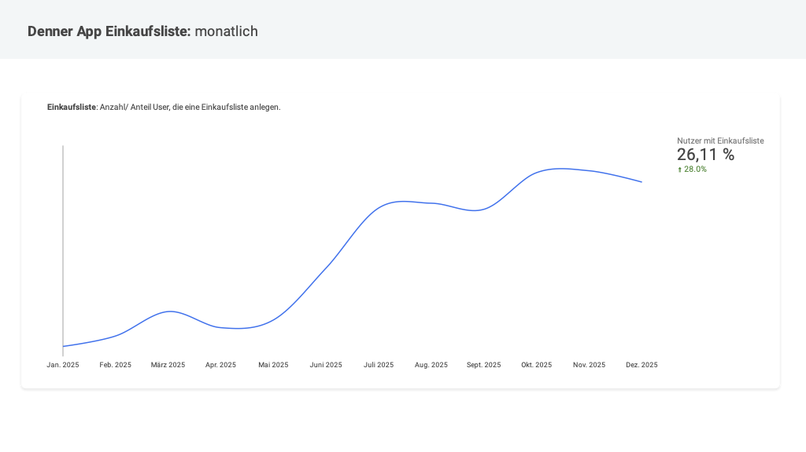

Optimierung der Einkaufsliste
Executive Summary
Das Einkaufslisten-Feature zeigte ein geringes Engagement, was zu Opportunitätskosten für das Business und schlechten App-Bewertungen führte. Durch eine datengetriebene Discovery-Phase sowie iterative Design-Entwicklung auf Basis von Nutzerfeedback habe ich die Einkaufslisten-Funktion der Denner App gezielt optimiert. Das Ergebnis:
- 28% mehr aktive Nutzer der Einkaufslisten-Funktion nach Go-Live
- 90% CSAT-Score
Meine Rolle:
- Projektleitung
- User-Research Lead
- Requirements Engineering

Meine Aufgaben:
- Qualitative UX Research: Wer sind die aktuellen Nutzer und wie erleben sie das Produkt aktuell?
- UX Design Low-Fidelity bis Mid-Fidelity: Vorschläge für Redesign
- Schreiben von Backlog-Items in Azure Devops und Durchführung von Acceptance Test
- Post-launch Dokumentationen
Angewandte Methoden:
DISCOVER
Problem identifizieren & validieren
Ich konnte über mehrere unabhängige Datenquellen zeigen, dass die Einkaufsliste die Erwartungen der Userinnen und User nicht erfüllte.
- Sentiment-Analyse der Rezensionen im Google Play Store und App Store
- 8% aller App-Rezensionen bezogen sich explizit auf die Einkaufsliste
- Explorative In-App Umfrage
- Frage: Wenn Sie einen Zauberstab hätten, was würden Sie an der Denner App ändern?
- 18% aller Befragten (n=1040) nannten eine Neugestaltung der Einkaufsliste.
EXPLORE & TEST
Design-Entwicklung & Iterative Validierung
Die Lösungen entstanden aus Nutzerfeedback und wurden über mehrere Iterationen validiert.
- Low-Fidelity Design basierend auf Umfrage-Feedback
- Durchführung von Interviews mit integriertem Usability-Test
- Iteration des Mid-Fidelity-Designs anhand der Insights
- Präsentation Research Findings an UX/UI Designer für High-Fidelity-Design
- Usability-Test mit High-Fidelity-Design (n=5)
- Anpassung des High-Fidelity-Designs

LISTEN
Impact nach dem Go-Live messbar belegt
Meine Ergebnisse aus der Research sowie meine low-fidelity Design Vorschläge haben dazu geführt, dass das Design verändert werden konnte. Die Optimierung hatte einen klar messbaren Effekt auf Nutzung und Zufriedenheit.
- +28% aktive Nutzer, die die Einkaufsliste nutzen
- CSAT Score: 90%
- Deutlich verbesserte Nutzerzufriedenheit bei einem Kernfeature, welches lange vernachlässigt wurde.
